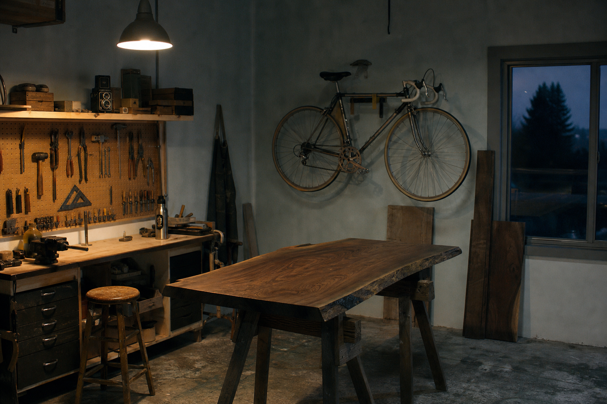

Off the Clock
The Work I Do with My Hands
When I step away from the screen, I look for things with weight, texture, and no undo command. For the past six years, that has meant wrenching on 1980s steel-frame road bikes, learning Japanese hand-cut timber joinery, and shooting Tri-X film on a 1974 twin-lens reflex camera. These projects force a different cadence. You cannot rush a five-step French polish, and you cannot edit an exposure once the shutter drops. Whether I am aligning a derailleur by ear or waiting out grain patterns in a walnut slab, making things slowly keeps my instincts sharp.
A few corners of my daily life, offline.